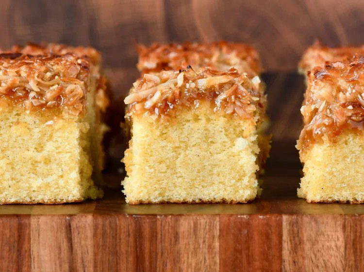
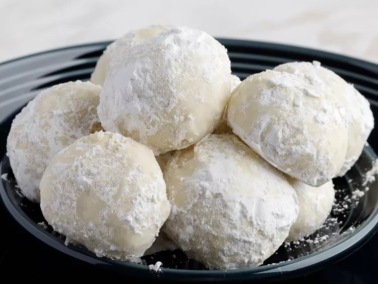
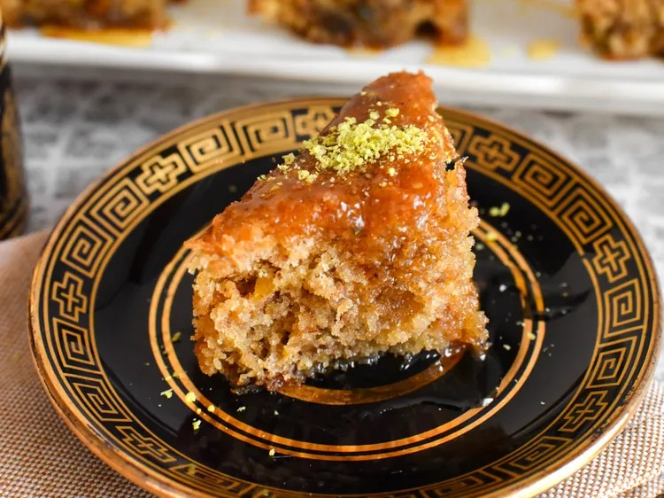

首页
我们为早春精选的3道最值得保存的烘焙食谱

丹麦梦幻蛋糕
“这款丹麦梦幻蛋糕是一种柔软的香草蛋糕，搭配简单烤制的椰子焦糖糖霜，口感略脆，与嫩滑的蛋糕形成了很好的对比，”食谱创始人Kim说。“对我们中的一些人来说，这款蛋糕，也叫懒菊蛋糕或懒日蛋糕，是我们祖母教我们做的第一个蛋糕。”
配料
- 1.5杯通用面粉
- 1.5茶匙泡打粉
- 1茶匙盐
- 3/4杯无盐黄油
- 1杯白糖
- 3个常温的鸡蛋
- 2茶匙香草粉
- 1杯全脂牛奶
- 1/2茶匙肉豆蔻粉
- 半茶匙杏仁粉
- 半袋红糖
- 1杯无糖椰子片
制作步骤
- 预热烤箱至350华氏度（180摄氏度）。在一个8x8英寸的方形烤盘上铺满足够的烘焙纸，使四周都有悬挂。
- 做蛋糕时，将黄油和牛奶放入烤箱适用的碗中。搅拌2到2分半钟，直到黄油融化在牛奶中，变成混合物。
- 将鸡蛋、白糖、盐和肉豆蔻倒入大碗，用电动搅拌机以中高速搅拌3到5分钟，直到颜色变浅且体积增加三倍。加入香草粉和杏仁粉，打至混合。加入面粉和泡打粉，低速搅拌至几乎混合，但仍残留一些干面粉。搅拌机继续使用较低转速，逐渐倒入热的酪乳混合物，搅拌至混合。将面糊倒入准备好的锅中。
- 将其放入预热的烤箱烤35到45分钟，直到插入蛋糕中心的牙签能干净地拔出来。
- 另外，将黄油、牛奶、红糖、盐和肉豆蔻放入一个高边的微波炉适用的碗中，然后在微波炉中加热。每分钟搅拌一次，直到糖溶解且混合物起泡。2到3分钟后，把碗从微波炉取出，加入椰子片和香草粉并搅拌。
- 把蛋糕从烤箱取出，预热烤箱的烤架。慢慢地将热糖霜覆盖在蛋糕顶部，轻轻铺成均匀的层。
- 把蛋糕放进烤箱烤2到3分钟，烤至糖霜冒泡并略微上色。把蛋糕从烤箱里取出来，在锅中冷却约15分钟，然后用烘焙纸将其移到冷却架上完全冷却。

俄罗斯茶饼
“这些俄罗斯茶饼裹在糖粉中，口感甜美，呈现雪球般的质感。我祖母'Bubba'从立陶宛来时带来了这个俄罗斯茶点，而现在我的家族已经世代传承了它的制作方法。”食谱创作者THEAUNT708说。
配料
- 2杯通用面粉
- 1杯融化的无盐黄油
- 至少2/3杯糖粉
- 1茶匙香草粉
- 1杯切碎的核桃
制作步骤
- 准备好所有所需配料。
- 预热烤箱至350华氏度（175摄氏度）。
- 用电动搅拌机在中等大小的碗里，将奶油黄油和香草一起搅拌至顺滑，用时2到3分钟。
- 将面粉和6大勺糖粉混合在单独的碗中搅拌均匀。加入黄油混合物，搅拌均匀。再加入核桃，搅拌均匀;混合物可能会呈碎屑状。
- 取小块面团，搓成1英寸大小的球。把球之间间隔2英寸放在未抹油的烤盘上。
- 将其放入预热的烤箱烤到边缘刚变成金黄色，大约用时12分钟。
- 将其从烤箱取出，转移到冷却架上冷却15分钟。
- 将剩余的1/3杯糖粉放入小碗中。把冷却好的饼干裹一两次糖粉。
- 享用美味的点心吧！

希腊蜂蜜蛋糕
“美味、制作方法简单又漂亮。我的家人都很喜欢！我是用一个9英寸的圆形蛋糕模具做的，之后把它切成同样大小的若干块。成品非常完美！”——Dee Dee
配料
- 1杯通用面粉
- 1.5茶匙泡打粉
- 1/4茶匙盐
- 3/4杯无盐黄油
- 1又3/4杯白糖
- 3个鸡蛋
- 1杯蜂蜜
- 1/4杯牛奶
- 1/2茶匙肉桂粉
- 3/4杯水
- 1茶匙柠檬汁
- 1茶匙刨丝橙皮屑
- 1杯切碎的核桃
制作步骤
- 将蜂蜜、1杯糖和水倒入锅中;用小火煮5分钟。倒入柠檬汁并搅拌均匀;煮沸后再煮2分钟。把锅从火上拿下来冷却，然后再做蛋糕。
- 预热烤箱至350华氏度（175摄氏度）。在一个9英寸见方的烤盘上撒上油和面粉。
- 将面粉、泡打粉、橙皮屑、肉桂和盐放入碗中;把碗放到一边。
- 将剩余3/4杯糖和黄油一起在大碗中打发至轻盈蓬松。一次打入鸡蛋。在面粉混合物中打发，交替加入牛奶，打至混合;加入核桃搅拌。将面糊倒入准备好的锅中。
- 在预热的烤箱里烘烤，直到插入蛋糕中心的牙签能干净地拔出来，用时大约40分钟。
- 把蛋糕从烤箱里取出，用牙签在表面戳洞。慢慢舀起冷却后的蜂蜜糖浆浇在蛋糕上。为了达到最佳效果，建议将蛋糕放置4到6小时冷却并吸收糖浆，然后切片并上桌。